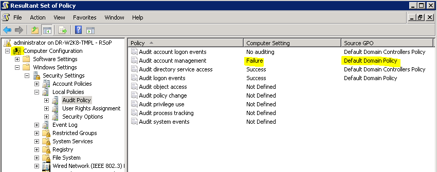
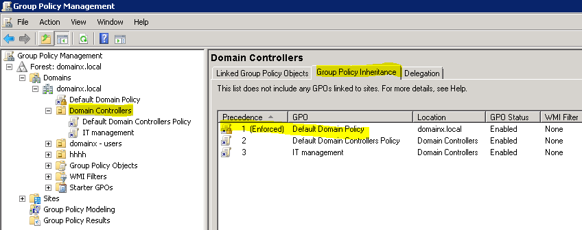
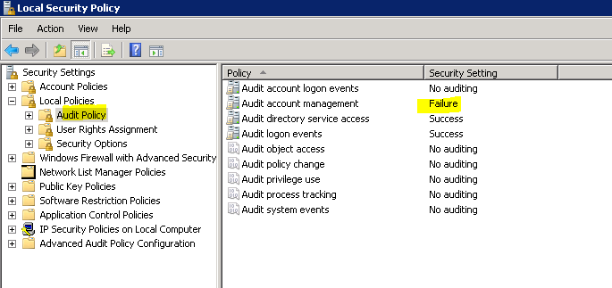

You have configured change auditing in accordance with the Installation and Configuration
guide (Installation and Configuration Guide), however auditing policies are not being applied and Active Directory Change Reporter
keep complaining about audit settings on all or some domain controllers. In addition to this
all or some changes in summary reports are listed as made by the System account.
The reasons why the auditing policies are not being enabled on domain controllers in the managed domain may be:
The reasons why the auditing policies are not being enabled on domain controllers in the managed domain may be:
- GPO you configured auditing policies in is not being distributed to problematic domain controllers
- GPO you configured auditing policies in is being distributed to problematic domain controllers but auditing policies are not being applied
- Make sure the GPO you configured auditing policies in is being distributed to problematic domain controllers. For that please use Resultant Set of Policy (RSoP) http://technet.microsoft.com/en-us/library/cc782615(v=ws.10).aspx
- Log onto the domain controller which Active Directory Change Reporter is complaining about
- Run Resultant Set of Policy (RSoP): Start>Run> type rsop.msc and press enter
- Expand Audit Policy as shown on the picture bellow and make sure you see the corresponding source GPO (the GPO which you enabled auditing policies in) for auditing polices and ensure no warnings and errors. In our case we see that Audit Account Management policy is set to Failure, while for successful auditing we need to have this policy set to Success. 
- To fix this problem open Group Policy Management Console (Start>Administrative tools>Group Policy Management), select Domain Controllers node, Open the Group Policy Inheritance tab and in the right pane review the order the GPOs are being applied to the Domain Controllers OU. In our case the Default Domain Policy is enforced and being applied first which causes a GPO conflict. Manage your GPOs inheritance to exclude the necessary policy settings to be applied. For more details regarding GPO inheritance please refer to the following Microsoft kb article: http://technet.microsoft.com/en-us/library/cc757050(v=ws.10).aspx

- If you resolved the inheritance issue and corresponding GPOs are being distributed to problematic domain controller but Active Directory Change Reporter still complains on Auditing settings this may indicate that Auditing policy settings are not being applied on a domain controller. To troubleshot this you can use Local Group Policy Editor: http://technet.microsoft.com/en-us/library/cc731745.aspx
- Log onto the domain controller which Active Directory Change Reporter is complaining about.
- Open Local Group Policy Editor: Start>Run>Secpol.msc
- Expand Audit Policy as shown on the picture bellow and make sure that the necessary auditing policies are set to success (Audit Account Management, Audit Directory Service Access ) and equal to ones you see in Run Resultant Set of Policy (RSoP)

- If the Local Group Policy Editor indicates different auditing setting (different from ones you configured and see in Resultant Set of Policy (RSoP)) this may indicate an issue with GPO applying on that particular domain controller. To troubleshooting this issue please refer to the following Microsoft kb articles:
Security auditing settings are not applied to Window Server 2008-based computers when
you deploy a domain-based policy:
http://support.microsoft.com/kb/921468
Troubleshooting Group Policy Problems:
http://technet.microsoft.com/en-us/library/cc787386(v=ws.10).aspx
Group Policy Analysis and Troubleshooting Overview
http://technet.microsoft.com/en-us/library/jj134223.aspx
Fixing Group Policy problems by using log files:
http://technet.microsoft.com/en-us/library/cc775423(WS.10).aspx
SceCli 1202 events are logged every time Computer Group Policy settings are refreshed on
a computer that is running Windows Server 2008 R2:
http://support.microsoft.com/kb/974639/en-us